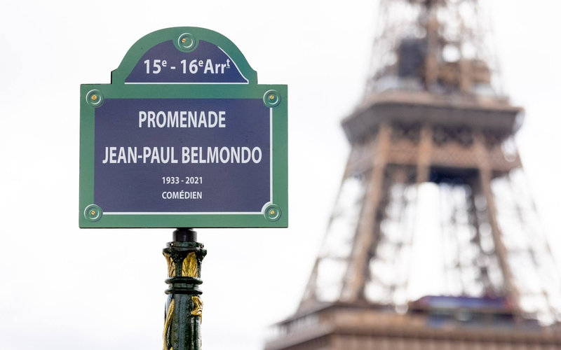

À la une
Jean-Paul Belmondo, un monument de Paris
Ce mercredi 12 avril, a été inaugurée la promenade Jean-Paul Belmondo sous le pont de Bir-Hakeim (7e). Le comédien, qui a grandi à Paris, a connu dans la ville-lumière son premier triomphe cinématographique avec « A bout de souffle » (1960). Le Conseil de Paris de mars 2023 avait décidé de baptiser ce lieu à son nom.